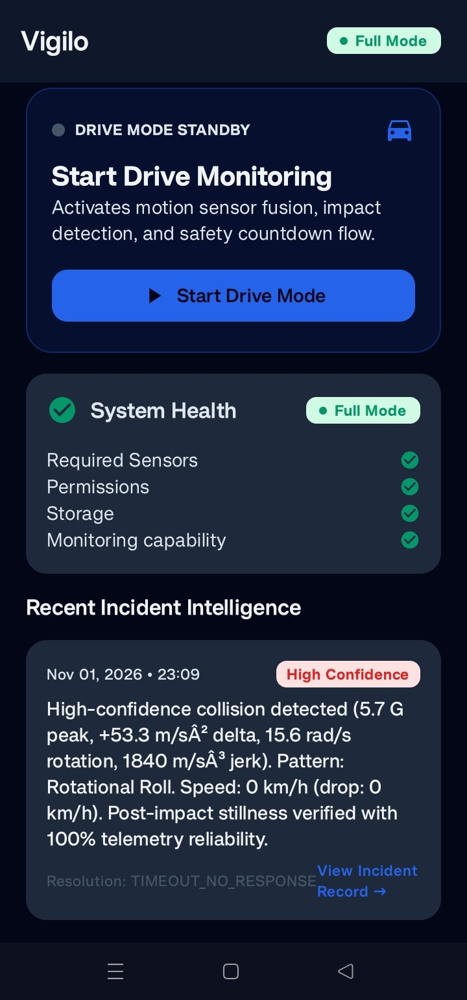
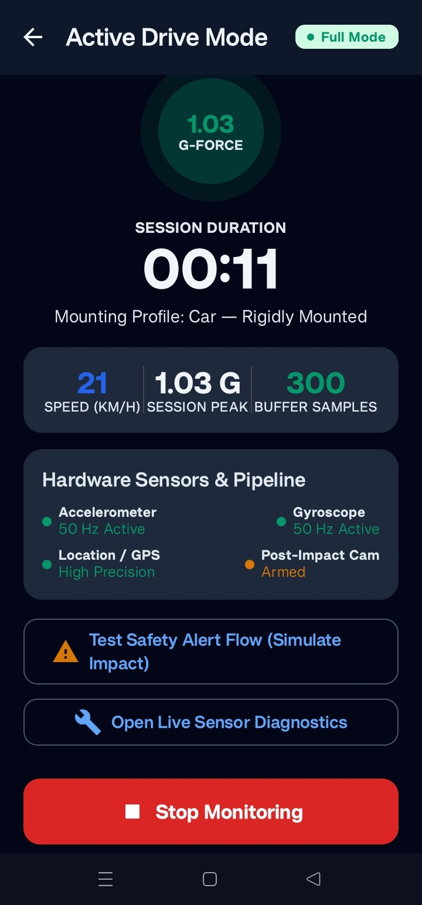
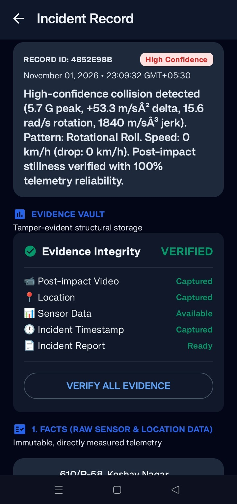

Application Screens
Home Dashboard
Drive Mode Cockpit
 Impact Alert Screen
Evidence Vault (VERIFIED)
Impact Alert Screen
Evidence Vault (VERIFIED)
Verified Mobile Interface
Actual application screenshots captured from a physical Android device running Vigilo.


